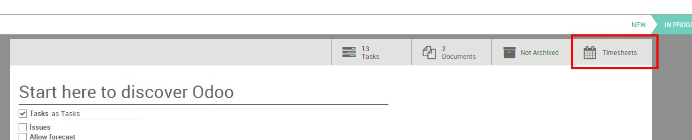
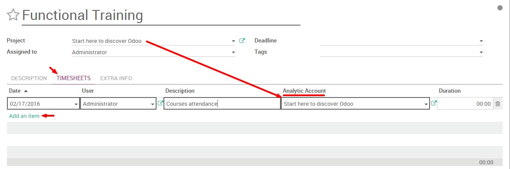
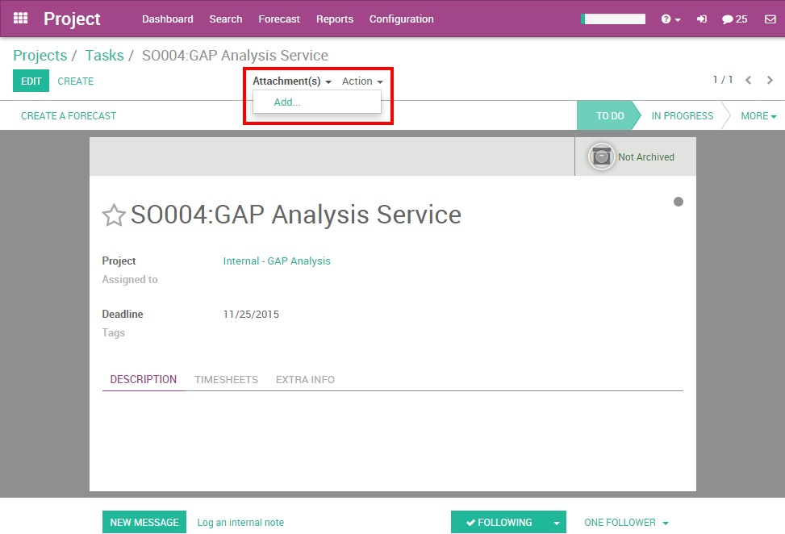
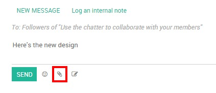
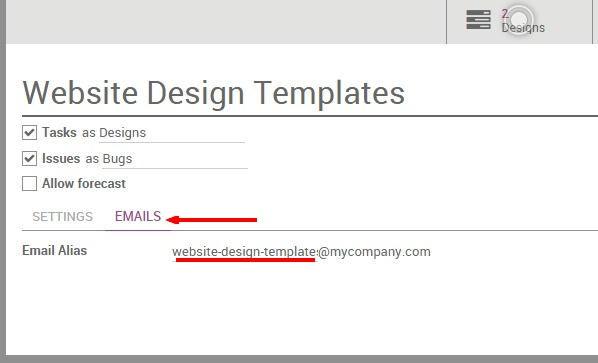
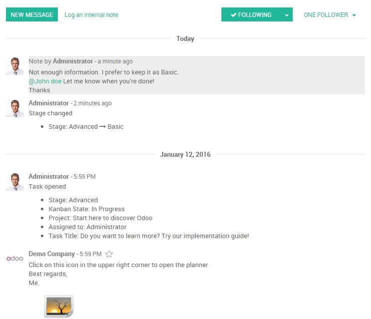
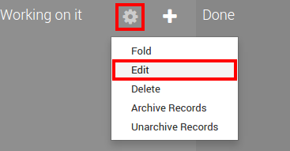

Отвественный
В Odoo, вы можете назначить человека, который отвечает за задачу.
При создании задачи по умолчанию ответственным назначается тот, кто создал ее. Чтобы изменить ответственного, просто наберите имя другого пользователя и выберите из предложенных сотрудников в выпадающем списке.
Совет
Если нужно добавить нового пользователя «на лету», нажмите «Создать и изменить». Для этого вам нужны права администратора.
Подписчики
К задаче можно добавить других пользователей как Подписчиков. Добавление подписчика означает, что этот человек будет уведомлен о любых изменениях, которые произошли в задаче. Этим вы разрешаете участвовать в обсуждении задаче из вне. Это может быть очень полезным, когда вам нужны советы коллег из других отделов. Вы также можете пригласить клиентов принять участие в обсуждении задаче. Они будут уведомлены по электронной почте о сообщениях в разговоре и смогут принять в нем участие, просто отвечая на почту. Подписчики могут видеть задачу, как и вы, с описанием и обсуждением.
Проект: подписывайтесь на проект, чтобы получать уведомления о всех процессах проекта
Вы можете подписаться на Проект. В этой ситуации вы будете уведомлены о любых изменениях в проекте: задачи, перешедшие с одного этапа на другой, обсуждения и т.д. Вы получите всю информацию на свой email. Эта функция подходит для менеджера проектов, который должен все время видеть общую картину по проекту.
Задача: подписаться на определенную задачу
Подписка на задачу - полезна, когда вы сосредоточены на определенной части проекта. Все уведомления или изменения в этой задаче также отправляются на email.
Можно выбрать события, о которых получать уведомления
Вы можете выбрать действия, о которых хотите получать уведомления, щелкнув стрелку вниз на кнопке. (см. ниже)
По умолчанию вы подписываетесь на обсуждение, но можно получать уведомления о заметках, о создании, блокировки, готовности или изменении задачи.

Управление временем: аналитические счета
Независимо от того, учитываете ли вы потраченное время при оценке будущих проектов или данных для выставления счетов, отслеживание времени в Project Management точно будет не лишним.
Приложение Odoo Timesheet прекрасно интегрировано с проектом Odoo Project и может помочь вам легко отслеживать затраченное время.
После установки Timesheet параметр учета времени станет доступен в проектах и задачах.
Чтобы избежать путаницы, Odoo работает с аналитическими счетами. Аналитическая счет - это имя, которое всегда будет ссылкой на конкретный проект или контракт. Каждый раз, когда создается проект, аналитическая учетная запись создается автоматически под тем же именем.
Учет затраченного времени на проект:
Нажмите на настройки проекта.

Нажмите кнопку Timesheet (Табели) в верхнем меню.
Вы увидите табель учета затраченного времени Odoo. Нажмите «Создать», и появится строка с сегодняшней датой и временем. Имя вашего проекта подставляется как аналитический счет. Задача автоматически не подставляется, вы можете добавить ее или нет.

Если вы перейдете на страницу Odoo Timesheet, your line will be recorded among your other timesheets.
Запишите затраченное время на выполнение задачи:
В рамках задачи доступен учет времени во вкладке Timesheets (Табели).
В задаче нажмите кнопку «Изменить». Перейдите на вкладку «Timesheet» и нажмите «Добавить элемент».
Появится строка с названием проекта, подставленного в аналитический счет.
Вы можете увидеть эти же строки в приложении Odoo Timesheet.
После завершения проекта вы получите реальное представление о времени, которое вы потратили на него, выполнив поиск по имени аналитической учетной записи вашего проекта.
Управление документами в задачах
Вы можете управлять документами, связанными с задачами, например, планы, фотографии и т.д. Изображение иногда более информативно, чем тысяча слов! У вас есть два способа добавить документ к задаче.
1. You can add an image/document to your task by clicking on the Attachment tab on the top of the form.
2. You can add an image/document to your task through the Chatter. You can log a note/send a message and attach a file to it. Or if someone sends an email with an attachment, the document will be automatically saved in the task.
Совет
Если у вас есть образ, который поможет понять задачу, вы можете настроить его как картинку фона. Он будет отображаться непосредственно в представлении Канбана.
Взаимодействие с задачами
Задачи в Управлении проектами Odoo призваны упростить работу в команде. Они помогут вам сэкономить время и ресурсы.
Идея состоит в том, чтобы оставаться в курсе того, что вас интересует. Вы можете взаимодействовать со своими коллегами, одновременно выполнять одну и ту же задачу, делегировать задачи и обсуждать их.
Создание задачи из письма электронной почты
Вы можете настроить адрес электронной почты, связанный с вашим проектом. Когда электронное письмо отправляется на этот адрес, оно автоматически создает задачу на первом этапе проекта, причем все получатели (To / Cc / Bcc) являются подписчиками.
С Odoo Online почтовый шлюз уже настроен, поэтому каждый проект автоматический получает адрес электронной почты.
Электронная почта всегда является именем проекта (с "-" вместо пробелов), вы увидите его под названием вашего проекта в панели инструментов проекта.

Этот адрес электронной почты создается по умолчанию, его имя можно изменить.
Алиас адреса электронной почты может быть изменен менеджером проекта.
Для этого перейдите в Настройки проекта и нажмите вкладку «Электронная почта».
Вы можете напрямую редактировать свой адрес электронной почты проекта.
Обсуждение, статус и уведомления.
Обсуждение - очень полезный инструмент. Он показывает историю задачи.
В Обсуждении вы можете видеть, когда задача была создана, когда она переходила с одного этапа на другой и т.д. Любые изменения, внесенные в эту задачу, автоматически регистрируются в Обсуждении. Оно также включает историю взаимодействия между вами и вашим клиентом или коллегами. Все взаимодействия регистрируются, что облегчает руководителю задачи анализ прошлых взаимодействий.
Вы можете взаимодействовать с подписчиками, будь-то внутренние (ваши коллеги) или внешние (например, клиент) путем записи заметки или важной информации. Кроме того, если вы хотите отправить электронное письмо всем подписчикам этой конкретной задачи, вы можете добавить сообщение. Для обоих этих действий дата и время сохраняются в записи.
Описание задачи, Pad
Odoo позволяет заменить поле описания задачи на заметки Etherpad (http://etherpad.org), которые можно писать одновременно нескольким пользователям. Текст каждого пользователя имеет свой собственный цвет.
Чтобы активировать эту опцию, перейдите к , отметьте "Совместный расширенный текст описания задачи (Collaborative rich text on task description)".

Совет
Если вам нужна только панель, а не страница задачи, вы можете щелкнуть по значку в правом верхнем углу, чтобы перейти в полноэкранный режим. Нажмите на значок </>, чтобы получить прямой URL-адрес описания задачи: это полезно, если вы хотите отправить его кому-либо, не добавляя этого человека в качестве подписчика.
Состояния задач
Настройте состояние задачи
Статус задачи - это самый простой способ сообщить своим коллегам, когда вы работаете над задачей, если задача готова или она заблокирована.
Вы можете изменить статус задачи из вида канбан или непосредственно в задаче. Просто нажмите на шарик статуса и выберите:
Пользовательские состояния
Вы можете решить, что означает каждый статус на этапе. На представлении канбана, нажмите на значок шестеренки в верхней части сцены, затем нажмите на редактирование:
Рядом с цветным шаром напишите пояснение для состояния.

Объяснение будет отображаться вместо стандартного текста:
Цветные теги
В каждой задаче вы можете добавить тег. Теги очень полезны для категоризации задач. Это помогает вам выделить задачу из вида Канбана или лучше найти их благодаря фильтрам.
Если вы всегда работаете с тегом определенного типа, вы можете выделить задачи, содержащие тег, с цветами. Каждый тег может получить определенный цвет, он очень заметен на представлении Канбана.

Чтобы он отображался на представлении канбана, вы должны установить цвет в теге непосредственно из задачи: